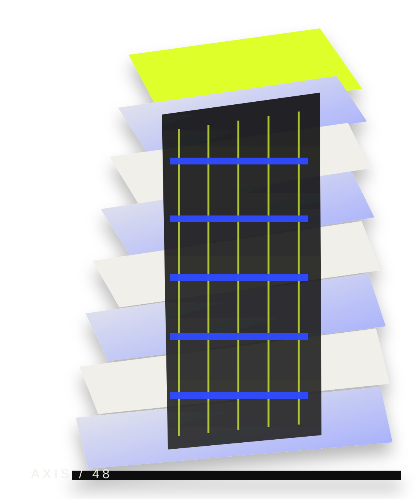
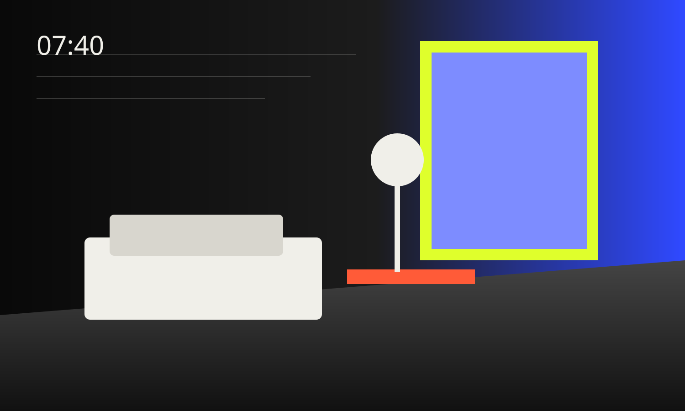

Свет как материал
Глубокие проёмы, боковые окна и внутренние отражающие плоскости создают разные световые сценарии в течение дня.

Urban residences / spatial living
Дом, где архитектура работает не как фон, а как интерфейс повседневной жизни.
AXIS 48 — демонстрационный архитектурный концепт для портфолио. Здесь нет попытки продавать статус через золото и мрамор: ценность строится вокруг света, тишины, логики маршрутов и качества приватных границ.
Глубокие проёмы, боковые окна и внутренние отражающие плоскости создают разные световые сценарии в течение дня.
Гостевые, хозяйственные и приватные зоны разведены так, чтобы повседневные процессы не пересекались без необходимости.
Террасы, буферные холлы и зелёные карманы формируют дистанцию между городом и личным пространством.
Не галерея интерьеров, а смена сценариев — от утреннего света до вечернего двора.

Выберите уровень. Вместо карточек — один разрез здания, где меняются ориентация, глубина террасы и характер приватности.
Максимальная дистанция от улицы, расширенная терраса и отдельный сценарий вечерней гостиной.
Параметры на странице используются как демонстрационные значения для концепта и не являются предложением реального объекта.
Интерактивная демонстрация того, как свет и приватность меняют характер одной и той же комнаты.
Инженерные решения показаны не как список оборудования, а как связанная система: воздух, акустика, доступ, сервис и обслуживание.
Концепция предполагает скрытые зоны подачи воздуха, раздельное управление дневной и приватной частью и сервисные маршруты без вмешательства в жилые помещения.
Вместо выдуманного адреса — демонстрационная модель окружения: четыре повседневных направления и ориентиры по времени.
Культурный маршрут: галереи, камерные сцены и общественные пространства в пешей или короткой транспортной доступности.
Фильтр помогает сравнить тип резиденции по числу приватных комнат и характеру пространства. Статусы — демонстрационные.
Две приватные комнаты, прямой визуальный контакт с зелёным буфером.
Три приватные комнаты и вытянутая дневная перспектива вдоль фасада.
Угловая гостиная, две ориентации и отдельный вход в мастер-зону.
Четыре приватные комнаты, расширенная терраса и вечерняя гостиная.
Frontend-only demo. Данные не отправляются и не сохраняются.